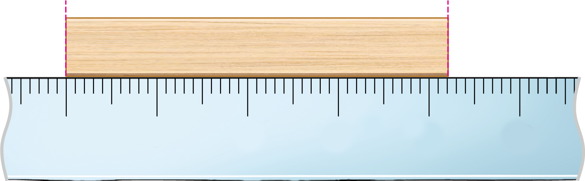
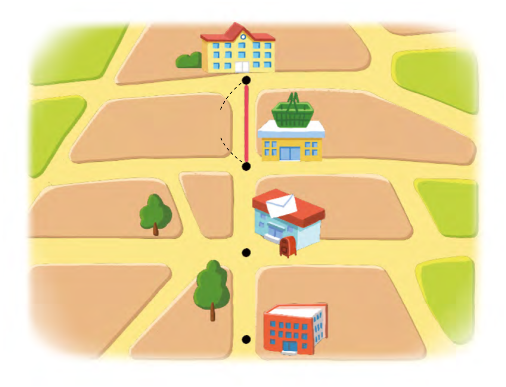

- 1
- 2
- 3
- 4
- 5
- 6
- 7
- 8
- 9
- 10
- 11
- 12
-
1 그림을 보고 나무토막의 길이를 나타내 보세요.
5 6 7 8 9 10cm4mm＝2mm42 -
2 안에 알맞은 수를 써넣으세요.
-
4 km 100 m＝m4100
-
2250 m＝km2m250
-
-
3 뒷산 등산로의 길이는 약
입니다.2 km 500 m -
4 운동화 긴 쪽의 길이는 약
입니다.20 cm 5 mm -
5 학교에서 슈퍼마켓까지의 거리는 약 500 m입니다. 학교에서 도서관까지의 거리는 약 얼마일까요?
학교약 500 m슈퍼마켓우체국도서관약 1500 m 또는 1 km 500 m -
6 안에 알맞은 수를 써넣으세요.
-
4분 55초＝초295
-
182초＝분3초2
-
-
7 1초 동안 할 수 있는 일을 모두 찾아 기호를 써 보세요.
ㄱ눈 깜빡이기ㄴ운동장 한 바퀴 뛰기ㄷ발표 전에 손 들기ㄱ,ㄷ -
8 잘못된 것을 찾아 기호를 써 보세요.
ㄱ75초＝1분 15초ㄴ3분 17초＝197초ㄷ128초＝1분 28초ㄷ9분 2초＝542초ㄷ -
9 계산해 보세요.
1 시 20 분 10 초 ＋ 35 분 10 초 1시 55분 20초 5 시 40 분 20 초 － 3 시 10 분 5 초 2시 30분 15초 -
10 혜성이는 샛별이보다 얼마나 더 오래 통화를 했는지 구해 보세요.
이름 통화한 시간 혜성 3분 29초 샛별 1분 10초 분2초19 -
11 2시간 3분 15초 전에 본 시계가 다음과 같았습니다. 현재 시각을 구하는 풀이 과정을 쓰고 답을 구해 보세요.
풀이예시계의 시각을 읽으면 3시 33분25초입니다.
3시 33분 25초＋2시간 3분 15초
＝5시 36분 40초
따라서 지금 시각은 5시 36분 40초 입니다.답5시 36분 40초 -
12 친구들이 가지고 있는 연필의 길이는 다음과 같습니다. 길이가 가장 긴 연필을 가진 친구는 누구인지 구하는 풀이 과정을 쓰고 답을 구해 보세요.
-
이름 연필의 길이 우주 239 mm 하늘 209 mm 은하 22 cm 5 mm -
풀이예단위를 같게 한 후 길이를 비교합니다.
우주: 239 mm, 하늘: 209 mm
은하: 22 cm 5 mm＝225 mm
따라서 가장 긴 연필을 가진 친구는 우주입니다.답우주
-